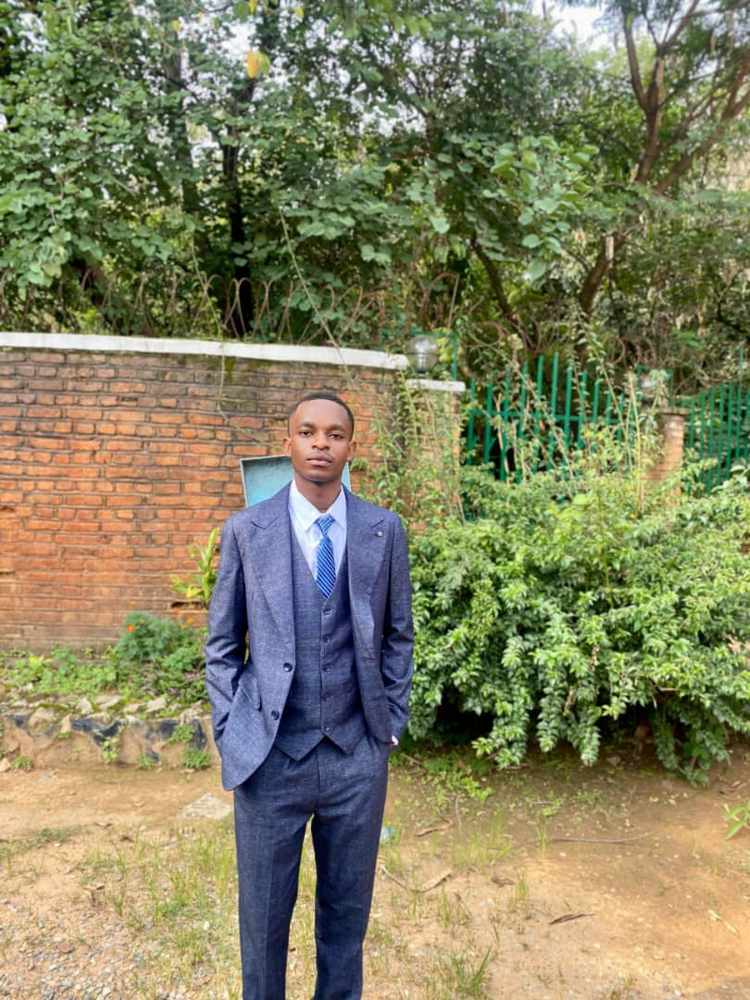

A propos de moi
bonjour! je suis kitoko morisho desire et je suis etudiant dynamique et motivé en informatique a l'UDBL. passionnée par le developpement web, l'intelligence artificielle, et le design graphique, je suis constamment a la recherche de nouvelles opportunités d'apprentissage et de defis stimulants.
Au cours de mes etudes, j'ai devellopé des solides compétences en programmation. je suis une personne rigoureuse, creative et j'aime travailler en equipe pour atteindre des objectifs communs. Mon objectif est de contribuer a des projets innovants, trouver un stage, et maitriser le Framework laravel.
Mes compétences
| CATEGORIES | COMPETENCES | NIVEAU |
|---|---|---|
| Programmation | HTML, css, JavaScrip, Python | Avancé |
| Design | Figma, Photoshop(bases) | Intermédiaire |
| Langues | Francais(matif), Anglais (fluide) | Avancé |
| Outils | Git, VS Code, Suite Office | Avancé |
| Soft skills | Communiation , Résolution de probleme, Autonomie | Expert |